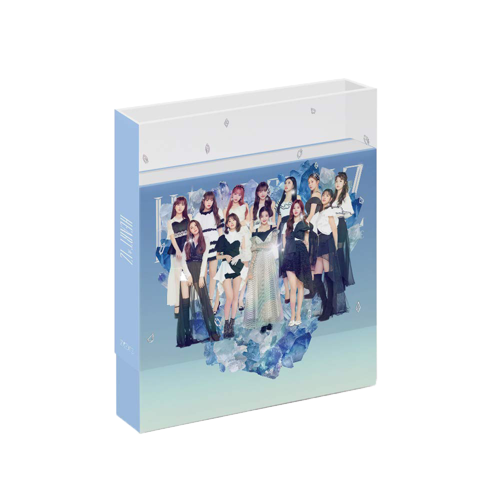
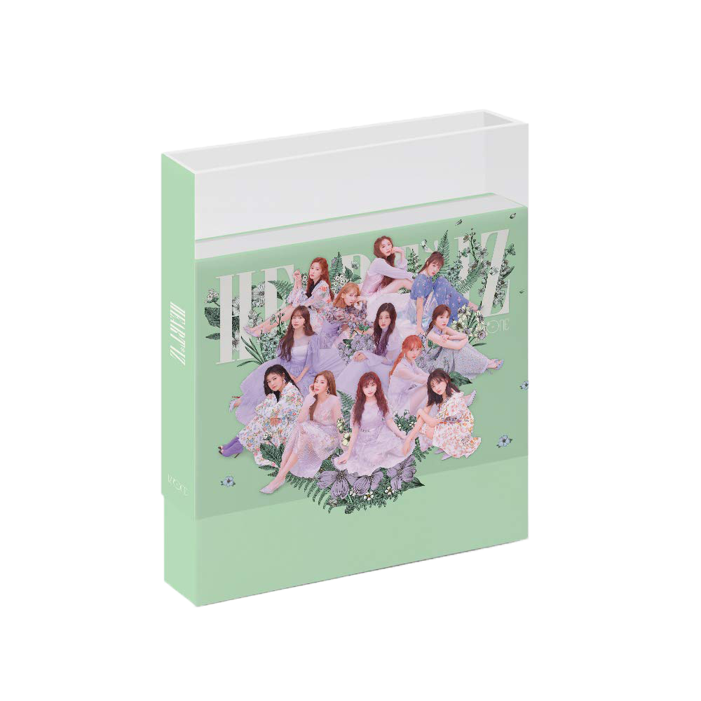
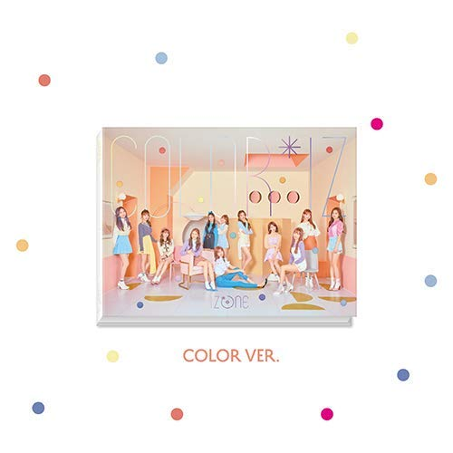
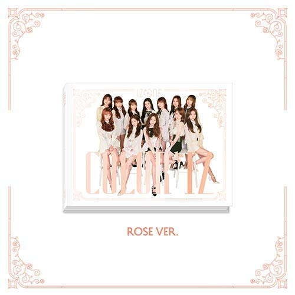

HEART*IZ
지난 2018년 정식 데뷔와 동시에 연일 기록을 경신하며 국내외 음원 및 음반 차트 석권, 음악 방송 1위, 신인상 5관왕 등 글로벌 인기를 과시하고 있는 아이즈원이 4월 1일 두 번째 미니 앨범 로 가요계 컴백을 알렸다.
작년 10월 한국 데뷔 앨범 를 발매한 데 이어 올해 2월 일본 데뷔 싱글 <좋아한다고 말하게 하고 싶어(好きと言わせたい)>로 초동 22만장을 돌파, 발매와 동시에 일본 오리콘 차트 데일리 싱글 1위를 차지하는 등 한일 양국 가요계에 성공적인 첫 발을 내디딘 아이즈원이 미니 2집 <로 약 6개월 만에 국내 전격 컴백, 또 한 번의 기록 세우기에 나서며 차세대 글로벌 대세로 확실한 자리매김에 나선다.수많은 리스너들의 뜨거운 관심 속 발매되는 이번 앨범 는 지난 데뷔 앨범을 성공으로 이끈 한성수 프로듀서와 또 한 번 의기 투합에 나섰다.
이번 앨범은 사랑과 마음을 의미하는 영단어 ‘Heart’와 ‘IZ*ONE(아이즈원)’의 합성어로, 아이즈원이 표현하고자 하는 진심의 이야기를 담은 앨범이라는 뜻을 가지고 있다. 일부 수록곡에는 멤버들이 직접 작사에 참여하는 등 아티스트로서 더욱 폭 넓고 깊어진 음악적 감성까지 담아냈다.
HEART*IZ(하트아이즈)는 앞서 ‘라비앙로즈 (La Vie en Rose)’를 통해 보여준 아이즈원의 뜨거운 열정에 사랑과 격려를 더해 이를 전하고자 하는 마음으로 탄생했다. 지난 데뷔 앨범에서는 아이즈원이 피워내고자 하는 뜨거운 열정을 ‘장미’로 표현해 냈다면 이번 앨범에서는 팬들을 비롯해 아이즈원의 음악을 듣는 모든 이들에게 응원의 메시지를 전달, 진정성 넘치는 마음을 확인할 수 있다. 특히 타이틀곡 ‘비올레타’는 대중들과 팬들에게 받은 에너지와 많은 사랑에 보답하기 위한 답가이자 아이즈원이 들려주는 응원가 같은 느낌을 선사할 것이다.
또한 타이틀곡 ‘비올레타’는 동화 ‘행복한 왕자’의 스토리 일부분을 착안해 탄생했다. 멤버들이 사랑하고 응원하는 대상을 제비꽃인 ‘비올레타’로 행복을 상징하는 ‘사파이어’를 제비꽃에게 전달하는 ‘제비’를 아이즈원으로 재해석해 모든 이들에게 존재 자체만으로도 빛이 나는 사람이라는 열정 가득한 응원의 메시지를 전하고 있다.


COLOR*IZ
지난 2018년 정식 데뷔와 동시에 연일 기록을 경신하며 국내외 음원 및 음반 차트 석권, 음악 방송 1위, 신인상 5관왕 등 글로벌 인기를 과시하고 있는 아이즈원이 4월 1일 두 번째 미니 앨범 로 가요계 컴백을 알렸다.
작년 10월 한국 데뷔 앨범 를 발매한 데 이어 올해 2월 일본 데뷔 싱글 <좋아한다고 말하게 하고 싶어(好きと言わせたい)>로 초동 22만장을 돌파, 발매와 동시에 일본 오리콘 차트 데일리 싱글 1위를 차지하는 등 한일 양국 가요계에 성공적인 첫 발을 내디딘 아이즈원이 미니 2집 <로 약 6개월 만에 국내 전격 컴백, 또 한 번의 기록 세우기에 나서며 차세대 글로벌 대세로 확실한 자리매김에 나선다.수많은 리스너들의 뜨거운 관심 속 발매되는 이번 앨범 는 지난 데뷔 앨범을 성공으로 이끈 한성수 프로듀서와 또 한 번 의기 투합에 나섰다.
이번 앨범은 사랑과 마음을 의미하는 영단어 ‘Heart’와 ‘IZ*ONE(아이즈원)’의 합성어로, 아이즈원이 표현하고자 하는 진심의 이야기를 담은 앨범이라는 뜻을 가지고 있다. 일부 수록곡에는 멤버들이 직접 작사에 참여하는 등 아티스트로서 더욱 폭 넓고 깊어진 음악적 감성까지 담아냈다.
HEART*IZ(하트아이즈)는 앞서 ‘라비앙로즈 (La Vie en Rose)’를 통해 보여준 아이즈원의 뜨거운 열정에 사랑과 격려를 더해 이를 전하고자 하는 마음으로 탄생했다. 지난 데뷔 앨범에서는 아이즈원이 피워내고자 하는 뜨거운 열정을 ‘장미’로 표현해 냈다면 이번 앨범에서는 팬들을 비롯해 아이즈원의 음악을 듣는 모든 이들에게 응원의 메시지를 전달, 진정성 넘치는 마음을 확인할 수 있다. 특히 타이틀곡 ‘비올레타’는 대중들과 팬들에게 받은 에너지와 많은 사랑에 보답하기 위한 답가이자 아이즈원이 들려주는 응원가 같은 느낌을 선사할 것이다.
또한 타이틀곡 ‘비올레타’는 동화 ‘행복한 왕자’의 스토리 일부분을 착안해 탄생했다. 멤버들이 사랑하고 응원하는 대상을 제비꽃인 ‘비올레타’로 행복을 상징하는 ‘사파이어’를 제비꽃에게 전달하는 ‘제비’를 아이즈원으로 재해석해 모든 이들에게 존재 자체만으로도 빛이 나는 사람이라는 열정 가득한 응원의 메시지를 전하고 있다.